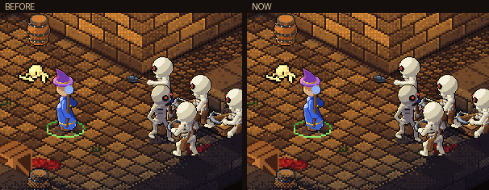
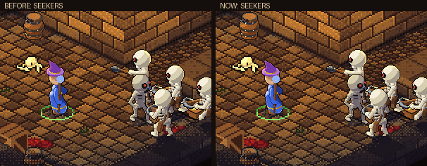
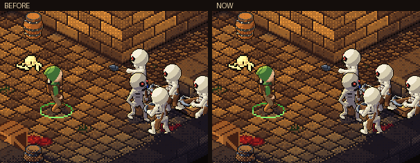
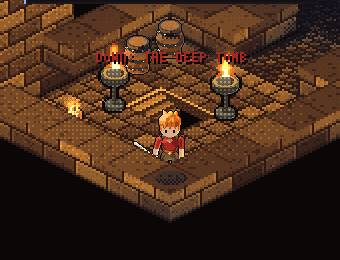
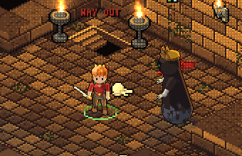
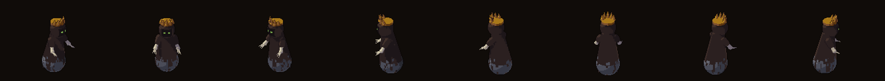
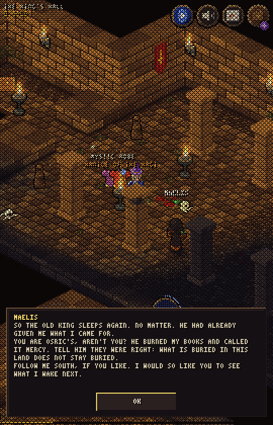
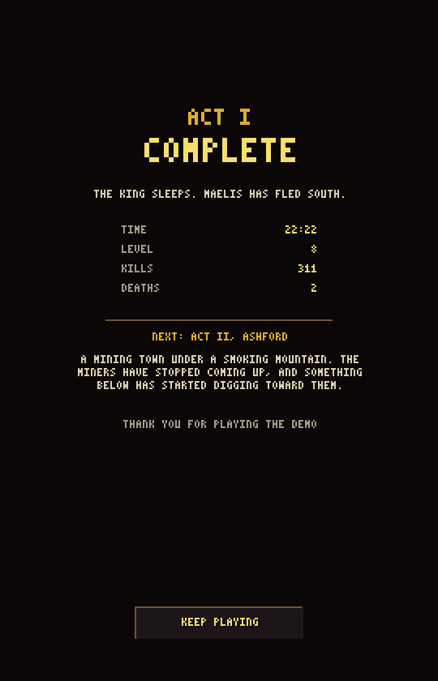
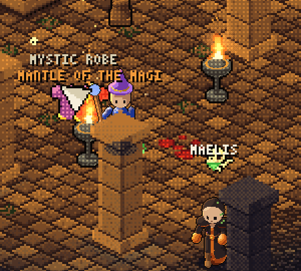

<title>The End of Act I</title>
<meta name="claude:viewport-fit-sides" content="cover">
<link rel="stylesheet" href="https://fonts.googleapis.com/css2?family=Cinzel:wght@600&family=Source+Sans+3:wght@400;600&display=swap">
<style>
  /* the game's crypt colors, one dark look (same frame as the other round pages); one column of sections */
  :root {
    --crypt: #0d0908; --panel: #18110e; --ember: #c9a77c; --bone: #e8dcc4; --dim: #8a7660; --rule: #2e221b; --gold: #f8de6a; --moss: #8fd06a;
    --display: 'Cinzel', 'Trajan Pro', Georgia, serif; --body: 'Source Sans 3', 'Segoe UI', system-ui, sans-serif;
    color-scheme: dark;
  }
  html, body { background: var(--crypt); color: var(--bone); }
  body { font: 16px/1.5 var(--body); margin: 0; padding-left: max(16px, env(safe-area-inset-left, 0px)); padding-right: max(16px, env(safe-area-inset-right, 0px)); padding-block: 28px 48px; }
  main { max-width: 680px; margin: 0 auto; display: grid; gap: 36px; }
  section { display: grid; gap: 12px; min-width: 0; }
  h1 { font: 600 1.6rem/1.2 var(--display); color: var(--ember); margin: 0 0 6px; letter-spacing: 0.04em; text-wrap: balance; }
  h2 { font: 600 1.05rem/1.3 var(--display); color: var(--ember); margin: 0; letter-spacing: 0.05em; text-wrap: balance; }
  p, ul { margin: 0; max-width: 64ch; }
  ul { padding-left: 1.2em; display: grid; gap: 4px; }
  .lede { color: var(--dim); }
  figure { margin: 0; display: grid; gap: 8px; }
  .frame { background: var(--panel); border: 1px solid var(--rule); padding: 6px; }
  .frame img { display: block; width: 100%; height: auto; image-rendering: pixelated; }
  .pair { display: grid; grid-template-columns: 1fr 1fr; gap: 10px; }
  .narrow { max-width: 300px; }
  figcaption { color: var(--dim); font-size: 0.92rem; }
  strong { color: var(--bone); }
  .wrap { overflow-x: auto; }
  table { border-collapse: collapse; font-variant-numeric: tabular-nums; min-width: 440px; }
  th, td { text-align: left; padding: 6px 12px 6px 0; border-bottom: 1px solid var(--rule); }
  th { color: var(--dim); font-weight: 600; font-size: 0.9rem; }
  td.n { text-align: right; color: var(--gold); }
  .m { color: var(--moss); }
</style>
<main>
  <header>
    <h1>The End of Act I</h1>
    <p class="lede">Dungeons of Bones, round 67. Five things at once: the magic missile and Rain of Arrows redrawn, every sound's volume measured and evened out, the barrow's second floor with a new boss, the Act I finale with Maelis and an end screen, and real stats for the art chat's monsters. A balance pass ran on top, with a bot playing the whole act as each class.</p>
  </header>

  <section>
    <h2>Magic missile</h2>
    <figure><div class="frame"></div><figcaption>Before on the left, now on the right.</figcaption></figure>
    <ul>
      <li>The missile is a comet now: a teardrop head pointing where it flies, white-hot in front with a violet rim and haze, and a tail drawn out behind it.</li>
      <li>A trail half again as long, thicker, fading through blue to violet, with motes left hanging in the air behind it.</li>
      <li>Where it bursts: a ring of six turning rune arcs that spreads and thins, rays flung out past it, a white flash, and a spray of sparks.</li>
    </ul>
    <figure><div class="frame"></div><figcaption>Seekers gets the same look, smaller.</figcaption></figure>
  </section>

  <section>
    <h2>Rain of Arrows</h2>
    <figure><div class="frame"></div><figcaption>Before on the left, now on the right.</figcaption></figure>
    <ul>
      <li>The storm's shadow falls over the ground, and a gold ring closes in to its edge so you can see where it lands.</li>
      <li>Real arrows: a steel head, a dark shaft and red fletching, falling at a slant from your side in volleys (eight every 0.2 seconds, the same damage as before), slower so you can watch them fall.</li>
      <li>Each arrow's shadow grows as it nears the ground. Hits spray sparks; misses kick up chips and dust and stay stuck in the floor (no more red speckles that looked like blood).</li>
    </ul>
  </section>

  <section>
    <h2>Sound volumes</h2>
    <p>I measured every sound as the game plays it, through a filter like a phone speaker (which plays nothing below about 300 Hz), and set each one by its role. The loudest and quietest main sounds were 26 dB apart; now they sit between about &minus;15 and &minus;25 dB.</p>
    <div class="wrap"><table>
      <thead><tr><th>Sound</th><th>Before</th><th>Now</th><th>Why</th></tr></thead>
      <tbody>
        <tr><td>The weight thud under a blow</td><td class="n">&minus;39</td><td class="n">&minus;28</td><td>All bass: a phone couldn't play it. Now it has a knock you can hear.</td></tr>
        <tr><td>Ground Slam crack</td><td class="n">&minus;28</td><td class="n">&minus;20</td><td>The biggest blow was one of the quietest sounds.</td></tr>
        <tr><td>Chest opening</td><td class="n">&minus;30</td><td class="n">&minus;21</td><td>A reward should be heard.</td></tr>
        <tr><td>Meteor</td><td class="n">&minus;23</td><td class="n">&minus;16</td><td>Up with the big moments.</td></tr>
        <tr><td>Hurt</td><td class="n">&minus;13</td><td class="n">&minus;17</td><td>Was the loudest sound in the game.</td></tr>
        <tr><td>Block and clank</td><td class="n">&minus;17</td><td class="n">&minus;19</td><td>Frequent; a step down.</td></tr>
        <tr><td>Fire sizzle</td><td class="n">&minus;13</td><td class="n">&minus;21</td><td>Too sharp for a background sound.</td></tr>
        <tr><td>Magic missile</td><td class="n">&minus;29</td><td class="n">&minus;23</td><td>Was lost under everything; kept below the spells.</td></tr>
      </tbody>
    </table></div>
    <p>The explosion and portal sounds are held back a little on purpose, so they don't boom in headphones.</p>
  </section>

  <section>
    <h2>The barrow's second floor</h2>
    <div class="pair">
      <figure><div class="frame"></div><figcaption>The way down, in the wraith's room.</figcaption></figure>
      <figure><div class="frame"></div><figcaption>The Barrow Wight.</figcaption></figure>
    </div>
    <figure><div class="frame"></div><figcaption>All eight facings (third art pass).</figcaption></figure>
    <ul>
      <li>The barrow's first floor now has stairs down in the wraith's room: <strong>THE DEEP TOMB</strong>, a level harder, seven rooms, more tomb guards and wraiths.</li>
      <li>At the bottom, in a proper room: <strong>THE BARROW WIGHT</strong>, a new boss. It raises the dead and calls frost orbs (break them before they burst). Its hoard is in two chests at the back of its room.</li>
      <li>The stairs up take you back to the first floor beside the way down, with everything as you left it.</li>
      <li>Tested on 10 layouts: always reachable, a boss room every time, chests reachable, and the way back out works.</li>
    </ul>
  </section>

  <section>
    <h2>The Act I finale</h2>
    <div class="pair">
      <figure><div class="frame"></div><figcaption>Maelis has his say.</figcaption></figure>
      <figure><div class="frame"></div><figcaption>The end screen.</figcaption></figure>
    </div>
    <figure class="narrow"><div class="frame"></div><figcaption>Maelis walking off, before he vanishes.</figcaption></figure>
    <ul>
      <li>A moment after the King falls, <span class="m">a cold green flash</span>, and Maelis steps out of it a few paces off: the cast-out monk, hooded, his green lantern glowing. The game pauses while he speaks (three short lines), then he walks off and is gone in another flash. The hall's stairs wait until he's had his say.</li>
      <li>Back in camp, Osric's thanks mention what you saw. After you collect, the end screen comes up: ACT I COMPLETE, your time, level, kills and deaths, a teaser for Act II (Ashford, a mining town under a smoking mountain) and KEEP PLAYING, which goes back to the game with the road south open.</li>
    </ul>
  </section>

  <section>
    <h2>Balance: a bot plays Act I</h2>
    <p>A new test bot plays from a new game to the end screen: it follows the quest arrow, fights everything it can see with the class's attack and skills, drinks below 40% life, talks to people and takes the first reward. Two runs per class.</p>
    <div class="wrap"><table>
      <thead><tr><th>Class</th><th>Game minutes</th><th>Level at the King</th><th>Deaths</th><th>Lowest life</th><th>Potions</th></tr></thead>
      <tbody>
        <tr><td>Warrior, before</td><td class="n">6 to 9</td><td class="n">6 to 7</td><td class="n">2 to 4</td><td class="n">0%</td><td class="n">4</td></tr>
        <tr><td>Warrior, now</td><td class="n">5 to 6</td><td class="n">6</td><td class="n">0</td><td class="n">31 to 39%</td><td class="n">3 to 6</td></tr>
        <tr><td>Mage</td><td class="n">4.6 to 4.9</td><td class="n">6</td><td class="n">0</td><td class="n">55 to 70%</td><td class="n">0</td></tr>
        <tr><td>Ranger</td><td class="n">5.5 to 5.7</td><td class="n">6</td><td class="n">0</td><td class="n">35 to 36%</td><td class="n">3</td></tr>
      </tbody>
    </table></div>
    <ul>
      <li><strong>The warrior died 2 to 4 times a run</strong> (the King, the Bandit Chief with his champions) while the others never did. He fights where the blows land, so he now takes 25% less damage, as Diablo III does for its melee classes. Now he dips as low as the ranger and still drinks potions.</li>
      <li><strong>The mage is the safest class</strong>: never below 55% life, no potions. I left it alone for now. Tell me if it feels too easy.</li>
      <li><strong>Length</strong>: the bot skips every line of dialogue, never stops to loot or sort the bag, and skips the barrow and the tower. So 5 to 6 minutes is a floor, not what a player will see. How long did your last run take?</li>
      <li><strong>The ultimate</strong> is set to level 4 for testing. Every bot reached level 6 on entering the King's hall, so for the demo release, level 6 puts it in your hands just before the King. Level 10, the old plan, would never come in Act I.</li>
    </ul>
  </section>

  <section>
    <h2>The art chat's monsters, with roles</h2>
    <ul>
      <li><strong>Crypt Spearman</strong>: out-reaches you (reach 1.9, the longest of the skeletons); a little less life.</li>
      <li><strong>Bone Axeman</strong>: hits hard (5 to 9) and dies fast, a bit quicker on his feet.</li>
      <li><strong>Grave Crossbowman</strong>: slow, heavy bolts from farther off.</li>
      <li><strong>Tomb Guard</strong> and <strong>Ogre Shieldbearer</strong>: a shield wall. Arrows and spells from in front glance off (GLANCE, 60% less), from the side or behind they hit in full, and so does melee. More life, less damage.</li>
      <li><strong>Fallen Knifer</strong>: fast and fragile, a swarm. <strong>Slinger</strong>: a pack that throws stones.</li>
      <li><strong>Brigand Mastiff</strong> and <strong>Ogre Enforcer</strong>: charge you like the boars, scraping a warning line first. Sidestep and they run into the wall, stunned.</li>
      <li><strong>Ogre Clubber</strong> and <strong>Rockthrower</strong>: steady bruisers with a little more weight.</li>
    </ul>
  </section>
</main>
